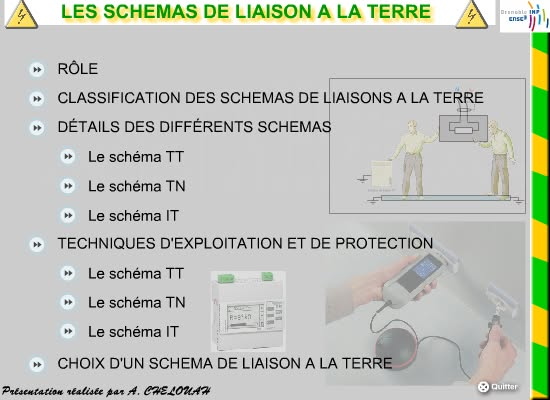

Les schémas de Liaison à la Terre

Le choix des équipements électriques de sécurité dans les installations dépend en grande partie pour la protection des personnes du schéma de liaison à la terre. On verra dans ce module qu'en dehors des considérations réglementaires, viennent s'ajouter des considérations économiques mais également de continuité de service. Des éléments de calculs détaillés sont fournis pour comprendre et modéliser l'installation qui subit un défaut d'isolement. J'y ajoute aussi des considérations technologiques pour les équipements utilisés.
Catégorie : Électrotechnique – Date : 2017-01-24
Mots‑clés : slt, sécurité, installation, continuité de service, protection, différentiel, magnétothermique, défaut, isolement, contact direct, contact indirect